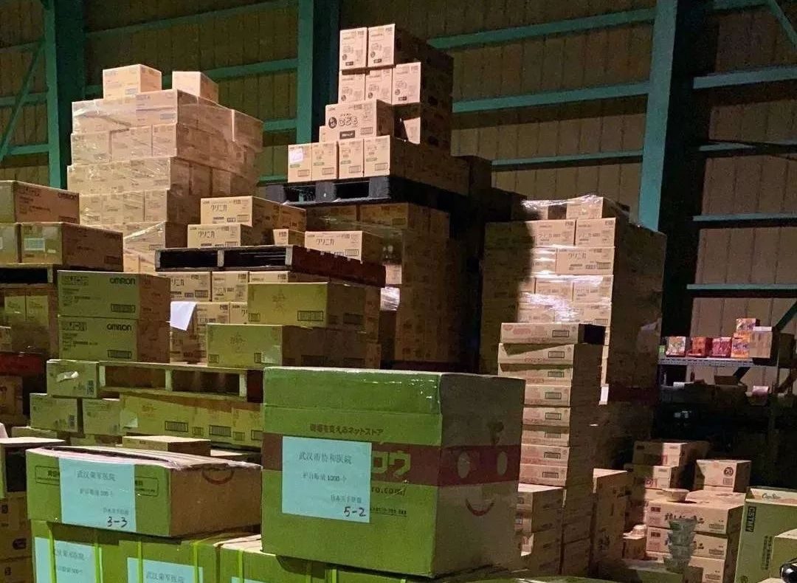

穿越疫区：武汉“爱心司机”一天12小时
原文链接 备份链接 武汉春寒料峭，疫情仍在蔓延。但也因为抗击疫情，本不相识的司机和医生之间，达到了前所未有的默契。“谢谢”和“加油”，是他们每次相遇和分开的标记 文 |《财经》特派武汉记者 刘以秦 编辑 | 谢丽容 图1: 在路上的爱心司 …

新冠肺炎疫情持续蔓延，在医疗物资紧缺情况下，援助一线，成了场生死攸关的接力赛。封城之际，困守武汉的辛迪，将募捐物资的接力棒，交到了在日本的朋友们手中。
本文为真故联合万能编辑部（ID：new-lens）共同推出。
故事时间：2020年
故事地点：武汉

“缺，太缺了！”
1月22日，等待9小时后，辛迪终于收到了朋友小林的回复。小林是武汉一所医院的护士，当疫情和恐慌在武汉蔓延，她奋战在一线，只能在高强度工作的间隙，回复辛迪“缺不缺物资”的消息。
紧接着，小林发来了医院照片。几位护士长时间佩戴口罩后，脸上出现了深深的压痕。由于口罩稀缺，她们不敢轻易摘下。
辛迪再一次意识到物资紧缺的程度。四天前，辛迪从杭州返回武汉时，没想到事情会发展到这个地步：口罩、消毒液、板蓝根抢购一空；确诊的人数不断上升，“一睁眼，都是坏消息”。
1月23日，武汉封城的消息传来，辛迪感到窒息，焦虑地在家闯来闯去时，一个想法冒了出来：她可以为物资告急的医院募捐口罩。
作为淘宝全球购“日本买手联盟”会长，辛迪打算发起在日本的买手朋友，募捐海外的医疗物资，由她来对接物流，支援一线医护人员。
和武汉一线医院联系，确认过口罩型号后，辛迪马上建了一个“物资捐助”微信群，在朋友圈扩散消息。此时，武汉口罩已是一户难求。辛迪心想，只要海外有一人响应，就至少可以让一位医护战士戴上口罩。
超出辛迪的预期，买手们像潮水般涌入群中。进群的人，有的是在日本的华人买手，也有她合作过的品牌方负责人。他们了解情况后，立即出门，冲到附近的药店采购。不同品牌、型号的口罩照片井喷般冒了出来。
当前日本还未出现口罩抢购潮，买手们拍下实物照片后，赶紧发到群里确认：“这个可以捐吗？”

图 | 日本买手联盟成员在购买口罩
看着形形色色的图片，辛迪突然意识到，自己疏忽了。
在疫情面前，时间分秒必争。但图中的口罩，有些并不符合医用规格，更关键的是，医用防护口罩在普通药店是稀缺品，难得一见。继续按这种方式募捐，不仅费时费力，甚至会出现很多“徒劳”工作。
当机立断，辛迪决定改变方式，募捐资金，再统一向供货商打款、采购。她在群里公布了收款账户，大家捐款后可以在群里按顺序报出姓名和金额。
发出捐款接龙的消息后，辛迪放下手机，有些忐忑。让大家直接将钱打给她，是场对信任的考验，她不知道自己是否成功。

频繁的消息提示声，打断了辛迪的思绪。买手们已经开始报数，人数很快达到了两位数。看到捐款模式有可行性，辛迪松了一口气，即刻与朋友开始筛选日本的货源。
经过比对，锁定日本的一家医疗网站后，辛迪发现，捐款资金已突破了7万人民币。惊喜之余，辛迪又面临新的抉择。
医疗物资紧缺，在很长一段时间内都将是常态，供不应求后，物价被炒高是必然趋势，而目前这家医疗网站货源较多，价格适中。
咬咬牙，辛迪和朋友说：“如果捐款凑不齐，就自己捐。”商量后，她们垫钱，一口气下了17万人民币的订单，物资包括医用口罩和护目镜。

图 | 部分物资清单
物资总额虽超过了已有资金10万，但当消息扩散，第二天，关注捐资的人不断增多。
随之而来的，也有质疑的声音。
“你们的物资交给红十字会了吗？”“怎么确保这些口罩交到医护人员手上？”“捐款全部用来买口罩了？”
即使时间紧张，辛迪也坚持在群里用文字分别回复，解答网友们的“十万个为什么”。她决定当晚就把捐款流水单、采购订单公布，让大家看到募捐的进度。
整理捐款名单时，辛迪发现，账号收到的资金大于群里接龙的金额总数。其实，有许多人默默捐了钱，却没有留下姓名。
在进行金额统计时，辛迪也看到五千、一万人民币出现了很多次，与这些数字对应的捐款人，几乎都是辛迪陌生的名字。原来，“日本买手联盟”里的许多买手店主，都积极拉动身边的人，帮忙募捐。
令辛迪没想到的是，第二天之内，款额就凑齐了。
接下来要解决的，便是物流问题。为了节省运输时间，经过协商，日本物流公司准备提供免费包机服务。1月30日，第一批医疗物资直接从大阪飞到了武汉天河机场，武汉协和医院派人到海关签收，运回医院。

图 | 从大阪运送至武汉天河机场的物资
当收到医护人员发来的签收信息，辛迪觉得一切付出没有白费。百感交集下，她发了一条朋友圈：“希望一切能快点好起来。”

1月27日，淘宝官方微博发布了辛迪和“日本买手联盟”的捐资消息，高晓松在微博上转发并评论道：“我们都在一起！”

图 | 高晓松微博截图
得到官方微博确认和高晓松力挺后，质疑的声音开始减少，更多人知道了辛迪和朋友们在做的事并加入了进来。
辛迪对接的医院，也从武汉辐射到湖北和全国，一共对接了包括武汉协和医院、荆州市第三人民医院、湖南益阳市南县人民医院在内的13家医院。
当辛迪根据每个地方的情况，按需采购时，之前令她担心的问题果然出现了。随着新型冠状病毒肺炎疫情不断扩大，日本的医疗物资也面临紧缺，供应不足，价格上涨。
原本200日元左右的护目镜，价格翻了十到二十倍。有几次，辛迪预付定金的订单，也因不可抗力因素被取消。
好在与此同时，物资捐赠也同步进行，身处日本的买手们穿梭药店，搜集口罩。
一位买手告诉辛迪，当他走进药店时，店员马上告诉他口罩限购，但当买手说明口罩是要寄往中国武汉的，店员当即取消了限购，还把店里的存货全拿了出来，帮着买手一起装箱、打包。
日本民间也自发组织捐赠，有些箱子上，除了写着“武汉加油”，还有“山川异域，风月同天”。这让辛迪感慨万千，当年她身在日本，即使“风月同天”，还是常常想念武汉的山川和亲人，“不管人在什么地方，家是唯一的归宿” 。
大学毕业后，辛迪做了一个决定，去日本闯闯，想出国锻炼自己。
一出去，辛迪就尝到人间辛苦，因为语言不通，她一开始只能做一些“比较卑微的工作”，最多时候一天打四份工：流水线食品打包、餐厅、厨房、工厂。就这样，她慢慢掌握日语。2007年，辛迪成为日本一知名商场第一个被聘请的中国导购员。
2011年，辛迪怀孕，她决定辞去工作，在家开淘宝店，转型做买手。
离职时，日本同事写给她几十张卡片，上面是满满的祝福：“辛苦了，经常看到你充满活力在身边。希望能生一个国际宝宝，什么语言都会说”，“你辞职了，感觉身边寂寞很多。孩子生出来后，再到我们这里来玩” 。
2017年5月，凭借6年的买手经验和品牌积累，辛迪在日本东京成立了“日本买手联盟”，为买手和品牌搭建平台。她的业务覆盖美妆、日化、服装、母婴、珠宝、保健品等，很快被淘宝全球购授予“全球购买手商业联合会合作伙伴”。
之后，辛迪常年往返杭州、日本两地，在武汉陪父母和女儿的时间，一年加起来不过二十多天。
今年春节前夕，即使当时武汉已拉响疫情警报，辛迪还是毅然回家，“不管怎么样，过年一定要跟家人在一起”。

现在，每天睁开眼，辛迪就开始和医院人员对接物资需求、处理捐资消息和筛选日本货源，要比对价格和到货日期。
看到符合标准、价格合适的物资，辛迪马上截图发给医院对接人，由他们判断是否可用，如果没问题，辛迪这边尽快购买，到货后再整理签收单。

图 | 物资送到医护人员手中
一天晚上，正埋头处理表格和单据时，一条转账消息让辛迪愣住了。转账金额很小，只有300元，却让辛迪感到惭愧。
这笔钱来自辛迪9岁的女儿。母女俩一个月都难得见到一次，春节本是两人相处的时间，但这一次，她没能陪伴女儿，每天都在和买手、医院对接工作。
辛迪没想到女儿看在眼里，默默支持，她在转账留言里写道：“这是我捐的钱。”发现女儿把头像改成了“我爱口罩”，辛迪询问是什么意思，女儿回答：“因为妈妈天天到处找口罩，天天买口罩。”辛迪听了感动，对女儿轻轻说：“妈妈会记得你的爱心。”
目前，“日本买手联盟”已经筹集到28万人民币的捐款和众多物资。最近的一批物资，将在2月5日抵达武汉天河机场，包括口罩、护目镜、防护服、消毒液和一次性手套。
作为武汉人，辛迪在朋友圈转发过一张“武汉加油”图。那张图的像素，已经随着转发次数多而变得模糊。但上面的文字，依旧清晰可辩：
“关闭一座城，保护一国人。武汉，是一座可敬之城，我们的城市病了，但我们会治好它。待春花烂漫、樱花盛开时，希望你们还是喜欢武汉。”
- END -
撰文 | 十三
编辑 | 张舒婷

原文链接 备份链接 武汉春寒料峭，疫情仍在蔓延。但也因为抗击疫情，本不相识的司机和医生之间，达到了前所未有的默契。“谢谢”和“加油”，是他们每次相遇和分开的标记 文 |《财经》特派武汉记者 刘以秦 编辑 | 谢丽容 图1: 在路上的爱心司 …
原文链接 备份链接 数据来源：腾讯新冠肺炎疫情实时追踪 截至2月3日早上7时， 全国新冠肺炎确诊个案16615例， 武汉确诊个案5142例。 根据1月31日湖北省疫情新闻发布会， 截至30日24时， 武汉地区共有6万余名医务工作者参与救 …
原文链接 备份链接 自从除夕夜做了筹款捐助医院的决定后，这就已经成为三个人生活的常态。 捐助发展得太快了。决定募资时，黄磊珂的目标只是4000块，刚好够买一箱楼下小卖部那样的N95口罩。他对物资标准之类的问题一无所知，唯一的判断是：“8块 …
原文链接 备份链接 作者 | 孙宏超 编辑 | 康晓 出品｜深网·腾讯小满工作室 欢迎下载腾讯新闻APP，阅读更多优质资讯 _编者按：_牵一发而动全身，面对疫情，需要中国全行业上下游企业携手共度难关，深网推出《共克时艰》系列报道，是为第一 …
原文链接 备份链接 《战疫口述记》，是燃财经在新型冠状病毒肺炎期间推出的特别栏目，记录疫情亲历者的观察和感受。本文为第6篇，查看前5篇请点击《我和公司都快熬不住了》《节后返京，太太太南了》《我的“流浪”春节》《农村这样防肺炎》《我在武汉 …